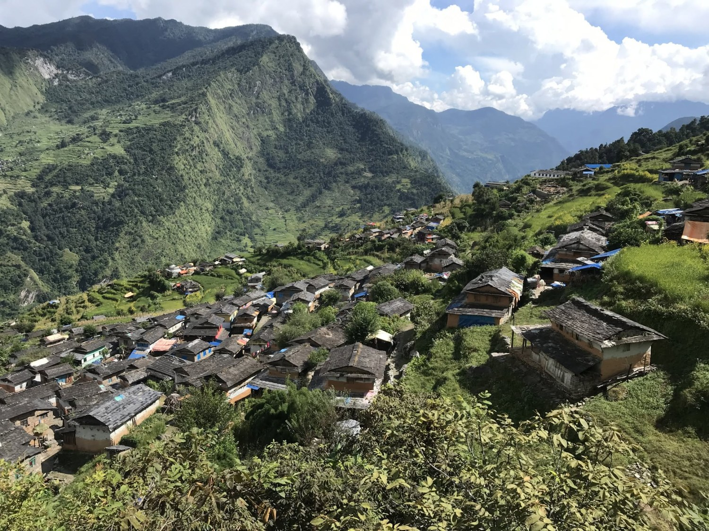
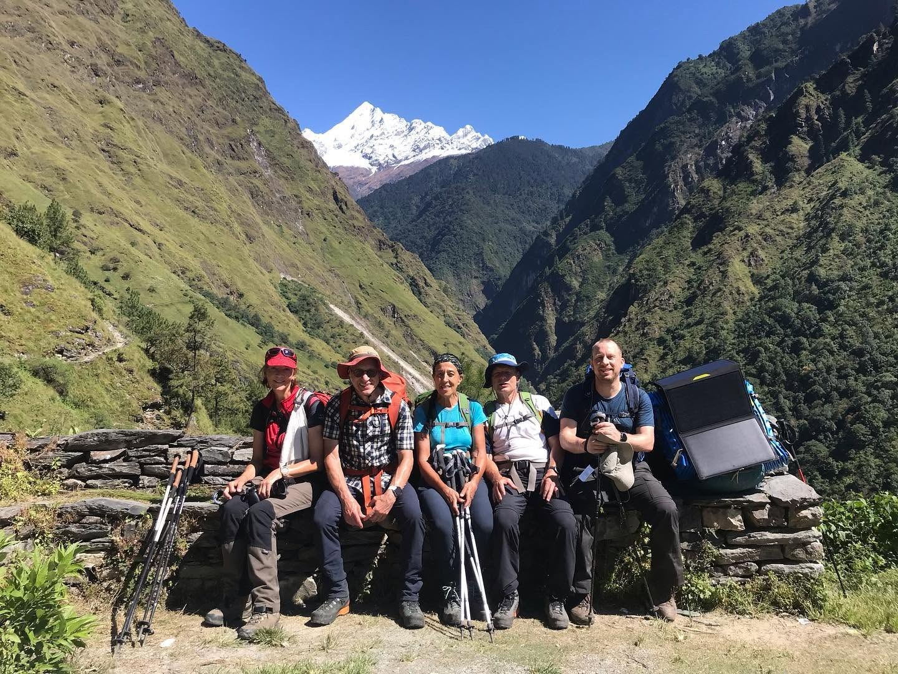
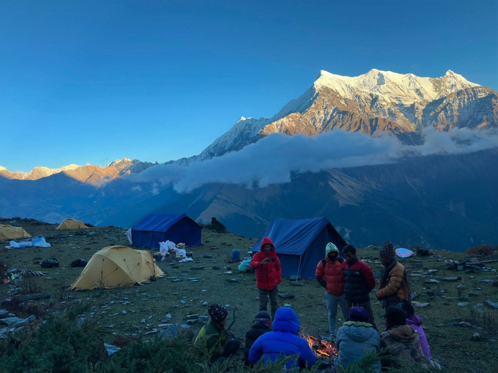
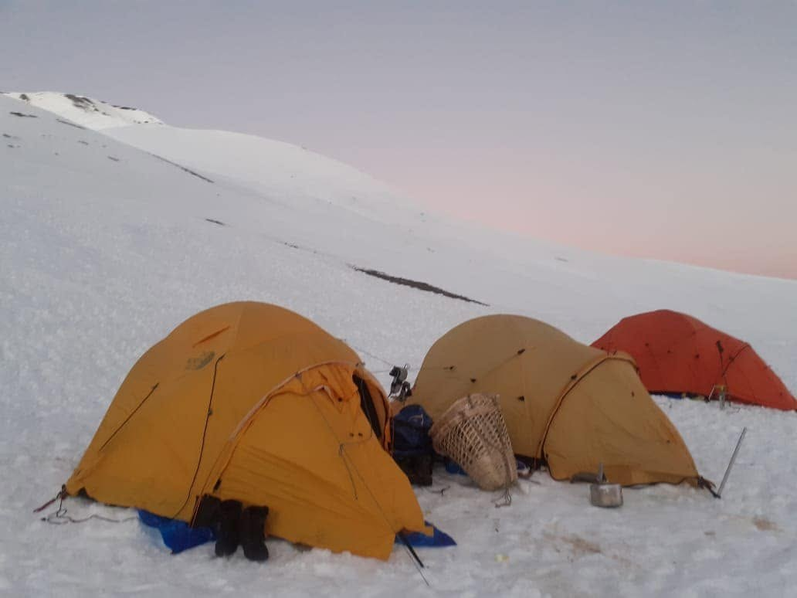
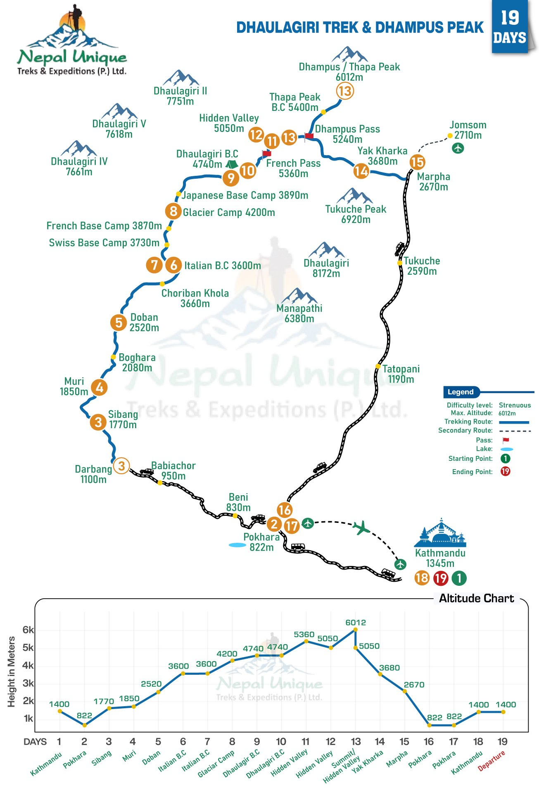

Dhaulagiri Trek and Dhampus Peak
The Dhaulagiri Trek and Dhampus Peak stand out as two of the most iconic trekking destinations in Nepal, offering an unparalleled combination of natural beauty, adventure, and cultural immersion. For trekkers looking to experience the remote and rugged side of the Himalayas, these treks provide an exceptional blend of scenic landscapes, challenging routes, and breathtaking panoramic views.





Key Trip Facts
Trek Overview
Trip Highlights
Dhaulagiri Trek and Dhampus Peak Overview
The Dhaulagiri Trek and Dhampus Peak stand out as two of the most iconic trekking destinations in Nepal, offering an unparalleled combination of natural beauty, adventure, and cultural immersion. For trekkers looking to experience the remote and rugged side of the Himalayas, these treks provide an exceptional blend of scenic landscapes, challenging routes, and breathtaking panoramic views. Nepal Unique Treks offers expertly guided tours, ensuring an unforgettable and safe trekking experience.
Dhaulagiri Trek: A Majestic Himalayan Journey
The Dhaulagiri Trek is one of the most remote and challenging treks in the Himalayas, attracting seasoned trekkers and mountaineers from around the world. Stretching over 15 days, this trek takes you through remote villages, lush forests, and high-altitude passes, providing a deep insight into the culture of local communities like the Magars and Gurungs. The trail is renowned for its pristine wilderness and isolation, making it a perfect choice for adventure enthusiasts seeking a unique experience far from the crowded trekking routes like Everest or Annapurna.
The highlight of the Dhaulagiri Trek is the awe-inspiring views of the Dhaulagiri massif, which includes the 8,167-meter Dhaulagiri Peak, the seventh-highest mountain in the world. The trek also offers close-up views of other towering peaks such as Machapuchare, Nilgiri, and Tukuche. One of the most challenging sections of the trek is crossing the French Pass (5,360 meters), which offers a stunning vantage point over the surrounding snow-capped peaks. For those looking for a real Himalayan challenge, the Dhaulagiri Trek provides an adventure that tests both physical endurance and mental resilience.
Dhampus Peak: A Hidden Gem for Trekkers and Climbers
Dhampus Peak, though less popular than some of Nepal’s other trekking peaks, offers an exceptional experience for those seeking a less crowded yet equally rewarding adventure. Situated in the Annapurna region, Dhampus Peak is a relatively easy climb compared to other Himalayan summits, making it a perfect option for trekkers looking to summit a peak without extensive mountaineering experience. The trek to Dhampus Peak is a blend of trekking and climbing, offering incredible views of Annapurna, Machapuchare, and Dhaulagiri.
The Dhampus Peak Trek is typically completed in about 10 to 12 days, making it a shorter alternative to the more strenuous Dhaulagiri Trek. Despite its relatively short duration, the trek offers stunning vistas, lush forests, and authentic Nepali village life. At the summit of Dhampus Peak, trekkers are rewarded with panoramic views of the Annapurna and Dhaulagiri ranges, creating a truly unforgettable experience. This trek is an excellent option for those who want to experience the thrill of peak climbing without the extreme challenges of other Himalayan summits.
Why Choose Nepal Unique Treks?
At Nepal Unique Treks, we specialize in providing expert guidance, top-notch services, and personalized itineraries for both the Dhaulagiri Trek and Dhampus Peak. Our team of experienced guides and porters ensures a safe and enjoyable trekking experience while allowing you to immerse yourself in the stunning natural beauty of the region. Whether you're looking to conquer the challenging Dhaulagiri Trek or the more accessible Dhampus Peak, Nepal Unique Treks offers tailor-made solutions to match your skill level and trekking ambitions.
Our commitment to safety, sustainability, and local culture makes us the go-to choice for trekkers seeking an authentic Himalayan adventure. Explore the rugged beauty of Nepal with Nepal Unique Treks and embark on a journey of a lifetime, whether you’re summiting peaks or exploring remote mountain villages.
Dhaulagiri Trek and Dhampus Peak Itinerary: Day by Day
19 Days program for Dhaulagiri Trek and Dhampus Peak. Daily timings and sequences remain flexible according to weather, flight operations, and group pace.
Day 1: Warm Welcome in Kathmandu International Airport 1345 m.
Approx. 1,345 m / 4,413 ft
Upon your arrival at Tribhuvan International Airport in Kathmandu, our representative will warmly welcome you and transfer you to your hotel. After some rest, we’ll meet for a detailed trip briefing, where you’ll be introduced to your guides and climbing team. The evening is free to prepare and relax before the big adventure begins with Nepal Unique Treks. Overnight at a hotel in Kathmandu.
Day 2: Drive from Kathmandu to Pokhara by Tourist Bus 7/8 hrs, 810 m
Approx. 811 m / 2,661 ft
Today, we either enjoy a scenic 6–7 hour drive or, in (Option), a 25-minute flight to Pokhara. Upon arrival, you’ll have the evening to explore the beautiful Lakeside area, stroll along Phewa Lake, or simply rest and take in the views of the Annapurna Himalaya range.
Day 3: hrs Drive to Darbang from Pokhara (1,100 m) – 4 hrs Trek to Sibang (1,770 m)
Approx. 1,770 m / 5,807 ft
After breakfast, we drive for 5 hours to Darbang, the starting point of our trek. After Lunch from here, we begin our journey on foot, 4 hrs trek through terraced farmlands and traditional rural villages to reach Sibang. This gentle start helps us ease into the trekking rhythm.
Day 4: Trek from Sibang to Muri (1,850 m) 6 hrs
Approx. 1,850 m / 6,070 ft
The trail narrows as we move deeper into the remote valley. We pass through forested ridges and isolated settlements before reaching Boghara. The terrain becomes more rugged, giving us the first real taste of wilderness.
Day 5: Trek from Muri to Doban (2,520 m) 6 hrs
Approx. 2,520 m / 8,268 ft
Today, we follow the Myagdi Khola river, trekking through beautiful bamboo and rhododendron forests. The sound of rushing water accompanies us along this serene and peaceful section of the trail.
Day 6: Trek from Doban to Italian Base Camp (3,660 m) 6 hrs
Approx. 3,660 m / 12,008 ft
We ascend gradually, enjoying stunning views of surrounding peaks. As we approach Italian Base Camp, the landscape opens up, revealing towering glaciers and cliffs. This is our first major gain in altitude.
Day 7: Acclimatization Day at Italian Base Camp 3660 m.
Approx. 3,660 m / 12,008 ft
Today is a rest and acclimatization day. We take short hikes around the base camp to help our bodies adjust to the higher elevation. It’s also a great chance to soak in the majestic mountain environment.
Day 8: Trek from Italian Base Camp to Glacier Camp (4,200 m) 6 hrs
Approx. 4,200 m / 13,780 ft
A technically challenging day, we cross glacial moraine and rocky terrain to reach Glacier Camp. Crampons may be needed depending on conditions. The scenery becomes more dramatic and icy.
Day 9: Trek from Glacier Camp to Dhaulagiri Base Camp (4,740 m) 6 hrs
Approx. 4,740 m / 15,551 ft
A stunning walk along the Chhonbardan Glacier brings us to Dhaulagiri Base Camp, set beneath the colossal north face of Dhaulagiri I (8,167 m). The sense of scale here is awe-inspiring.
Day 10: Acclimatization and Rest at Dhaulagiri Base Camp 4740 m
Approx. 4,740 m / 15,551 ft
We take a full day to rest and acclimate to the high altitude. Optional glacier walks or light hikes are encouraged to keep active while allowing your body to adjust
Day 11: Cross French Pass (5,360 m) to Hidden Valley (5,050 m) 6/7 hrs
Approx. 5,050 m / 16,568 ft
We make an early start for one of the most thrilling parts of the trek—crossing the high and snowy French Pass. The climb is steep but rewarding, with panoramic views of Dhaulagiri, Tukuche, and more. We then descend into the beautiful and secluded Hidden Valley.
Day 12: Rest and Acclimatization in Hidden Valley for preparation for Dhampus Peak Climbing
Approx. 5,050 m / 16,568 ft
This day allows us to rest, explore the high-altitude valley, and prepare for our Dhampus Peak summit attempt. Light acclimatization hikes are optional.
Day 13: Summit Dhampus Peak (6,012 m) – Return to Hidden Valley 8/9 hrs
Approx. 6,012 m / 19,724 ft
We begin our summit push early in the morning, aiming to reach the top of Dhampus Peak (6,012 m) in 4–5 hours. The ascent involves snow and rock, but it’s non-technical with the help of our experienced guides. From the summit, we enjoy unmatched views of Dhaulagiri, Nilgiri, Annapurna, and Mustang. We then descend back to Hidden Valley.
Day 14: Cross Dhampus Pass (5,240 m) – Trek to Yak Kharka (3,680 m) 7/8 hrs
Approx. 3,680 m / 12,073 ft
Today, we cross Dhampus Pass and begin our long descent through high alpine meadows. We gradually re-enter green terrain as we arrive at Yak Kharka.
Day 15: Trek to Marpha Village 2650m 6 hrs
Approx. 2,650 m / 8,694 ft
The final trekking day takes us through the windy Kali Gandaki valley, passing the charming village of Marpha known for its apple orchards. We continue to Marpha Village, a vibrant town with a small airstrip.
Day 16: Drive from Marpha Village to Pokhara 810 m, 7/8 hrs
Approx. 810 m / 2,657 ft
The drive follows the Kali Gandaki River through the deepest gorge in the world. Scenic views of the Annapurna and Dhaulagiri ranges. You’ll pass through Kalopani, Tatopani, and Beni before reaching Pokhara. After Beni, the road improves significantly with a blacktopped surface to Pokhara.
Day 17: Relaxing Day in Pokhara Your shelves 810 m, and explore around there
Approx. 810 m / 2,657 ft
After days of trekking, enjoy a well-deserved rest day in the beautiful lakeside city of Pokhara. Spend the day at your own pace—relax by Phewa Lake, explore vibrant Lakeside cafés, or visit popular attractions like the World Peace Pagoda, Devi’s Falls, or the International Mountain Museum. Optional activities such as boating, massage, or yoga are also available for those looking to unwind fully.
Day 18: Drive frop Pokhara to Kathmandu by Tourist Bus 7/8 hrs, 1345 m
Approx. 1,345 m / 4,413 ft
After breakfast, we begin our journey back to Kathmandu. You can either: Drive: Take a scenic tourist bus (6–8 hours) through the hills and river valleys of central Nepal. Fly: Choose a 25-minute flight for a quicker return, offering aerial views of the Himalayas and countryside. Extra $120 per person Upon arrival in Kathmandu, transfer to your hotel and enjoy the rest of the day at leisure.
Day 19: Departure to International airport
Peak Climbing
After breakfast (or depending on your flight time), you’ll be transferred to Tribhuvan International Airport for your onward journey. Nepal Unique Treks Team will assist with all departure formalities and bid you a warm farewell, hoping to see you again for another Himalayan adventure.
What is Included (Regular Package)
What is Excluded
Booking Dates & Availability
Packing List for Dhaulagiri Trek and Dhampus Peak
Fixed ropes, ice bars, and group climbing hardware are arranged by our Sherpa climbing crew; personal technical gear can be checked in Kathmandu.Technical Mountaineering Hardware (5 items)
Summit Apparel & Protection (4 items)
High-Camp Sleep & Approach (3 items)
Read before you book: Dhaulagiri Trek and Dhampus Peak
Practical logistics derived directly from this package's route facts, inclusions, and elevation profile.
Accommodation & Meals (Hotel and Camping)
Accommodation follows the package grade (Hotel and Camping) in Kathmandu and along the Peak Climbing route. Check your package Includes section for included meals and Kathmandu hotel nights.
Permits & Local Logistics
Transportation is arranged via Tourist Bus, Car, Van. Applicable permits listed in the package inclusions are arranged by Nepal Unique Treks prior to departure.
Route Difficulty & Elevation (6012 M)
Dhaulagiri Trek and Dhampus Peak is rated Adventurous with a maximum elevation of 6012 M. Follow your guide's pacing and stay hydrated throughout the 19 Days itinerary.
Best Time to Visit (Spring (March – May) Autumn (Sep – Nov))
Recommended operating season on the source page: Spring (March – May) Autumn (Sep – Nov).
Altitude Profile of Dhaulagiri Trek and Dhampus Peak
Weather on Dhaulagiri Trek and Dhampus Peak
Dhaulagiri Trek and Dhampus Peak Route Map

Book This Trek
Contact our Kathmandu coordinators using the booking panel for private or fixed-group departures.
Trip Feedback
Explore verified traveller stories or leave feedback on Nepal Unique Treks.
Visit Nepal Unique Treks